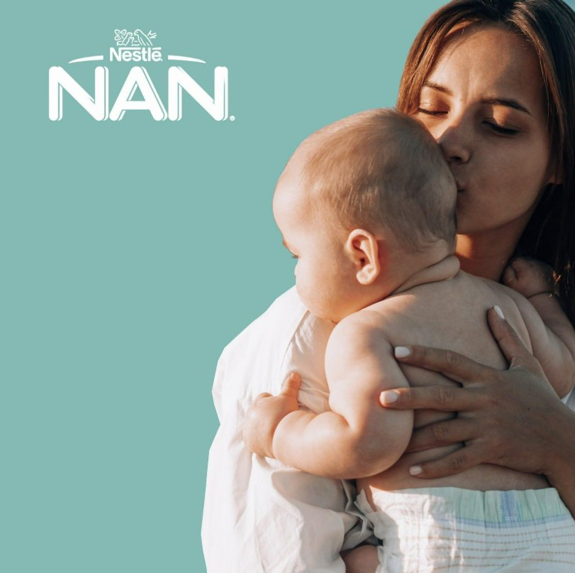

Comunicación de marca y activaciones. Se separan de las promociones comerciales y del PLV de tienda.
Portugal: NAN lanza «Ciência da Mãe & Ciência de NAN»
PortugalNAN · NestléCampaña de marca y comunicación30 sep 2026

Imagen de comunicación de NAN: fondo turquesa, logotipo blanco de Nestlé NAN y fotografía de una madre besando a su bebé.
Nestlé Portugal presentó una campaña que conecta la experiencia cotidiana de madres y padres con la investigación científica en nutrición infantil. La idea reconoce el conocimiento intuitivo de las familias y lo relaciona con la experiencia científica de la marca, que destaca más de 160 años de investigación.
Es comunicación emocional para que la marca no se perciba solo desde la composición técnica de sus fórmulas, apoyada en confianza, experiencia parental, investigación y relación continuada con la familia.
Para Smileat
Buen ejemplo de cómo conectar los atributos del producto con una verdad cotidiana del consumidor.
Límite de la evidencia
Campaña lanzada en el periodo, pero sin pruebas suficientes para considerarla una activación de PLV. Se clasifica en Campaigns & Communication, no en stoppers y displays.
Fuente: comunicado de Nestlé Portugal (Cision) sobre la campaña de NAN.
Mercadinho do Bebé: contacto directo con familias
PortugalEvento y samplingOporto · 26 sep 2026
Evento que reunió a marcas y familias del universo del bebé. Se anunció la participación de marcas como Smileat y Gerber, con actividades de contacto con el público y reparto de muestras.
Interés comercial
Presentar la marca de forma más directa.
Facilitar la prueba de producto.
Captar contactos y generar interacción con las familias.
Conocer objeciones, preferencias y hábitos de compra.
Combina producto y contacto con el consumidor en un mercado internacional donde Smileat busca desarrollar su presencia.
Clasificación
Evento y sampling, no PLV de supermercado. Sin imágenes de la ejecución no se da por confirmado el tipo de expositor utilizado.